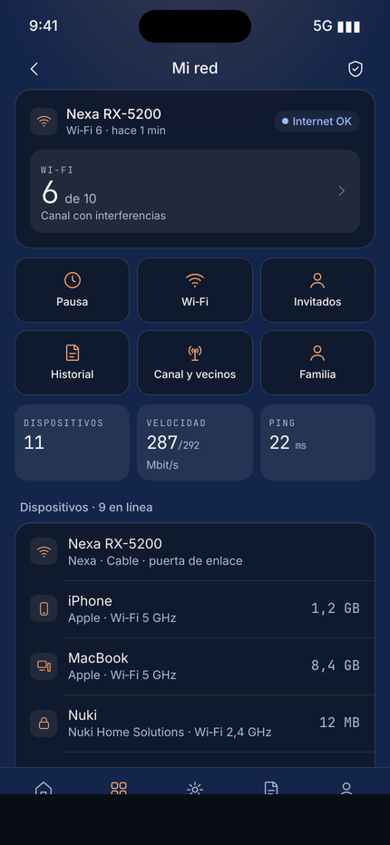
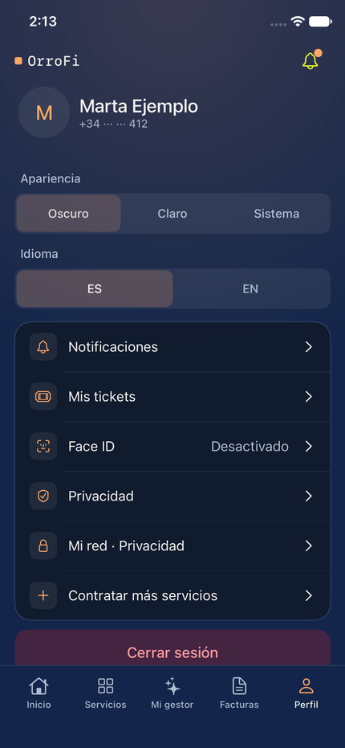

Приложение OrroFi
Весь домашний интернет и домашняя сеть — в одном приложении
OrroFi собирает в одном приложении то, что обычно живёт в звонках и письмах: услуги, счета, сбои и домашний Wi‑Fi. Помощник Mi gestor отвечает на вопросы, а раздел Mi red показывает, кто в сети дома.

На чём держится OrroFi
Услуги
Оптика, радиодоступ, мобильная связь и Wi‑Fi
Скорость и состояние связи, заказ, сбой и визит мастера. Как есть, без прикрас.
Помощник
Mi gestor
Помощник сразу говорит, что он искусственный интеллект, отвечает коротко и может передать разговор человеку.
Кадры приложения



